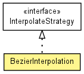

toxi.math
Class BezierInterpolation
java.lang.Object
 toxi.math.BezierInterpolation
toxi.math.BezierInterpolation
- All Implemented Interfaces:
- InterpolateStrategy
public class BezierInterpolation
- extends java.lang.Object
- implements InterpolateStrategy

Bezier curve interpolation with configurable coefficients. The curve
parameters need to be normalized offsets relative to the start and end values
passed to the interpolate(float, float, float) method, but can
exceed the normal 0 .. 1.0 interval. Use symmetrical offsets to create a
symmetrical curve, e.g. this will create a curve with 2 dips reaching the
minimum and maximum values at 25% and 75% of the interval...
BezierInterpolation b=new BezierInterpolation(3,-3);
The curve will be a straight line with this configuration:
BezierInterpolation b=new BezierInterpolation(1f/3,-1f/3);
|
Field Summary |
float |
c1
|
float |
c2
|
|
Method Summary |
float |
interpolate(float a,
float b,
float t)
Implements an interpolation equation. |
void |
setCoefficients(float a,
float b)
|
| Methods inherited from class java.lang.Object |
equals, getClass, hashCode, notify, notifyAll, toString, wait, wait, wait |
c1
public float c1
c2
public float c2
BezierInterpolation
public BezierInterpolation(float h1,
float h2)
interpolate
public float interpolate(float a,
float b,
float t)
- Description copied from interface:
InterpolateStrategy
- Implements an interpolation equation.
- Specified by:
interpolate in interface InterpolateStrategy
- Parameters:
a - current valueb - target valuet - normalized interpolation factor (0.0 .. 1.0)
- Returns:
- interpolated value
setCoefficients
public void setCoefficients(float a,
float b)